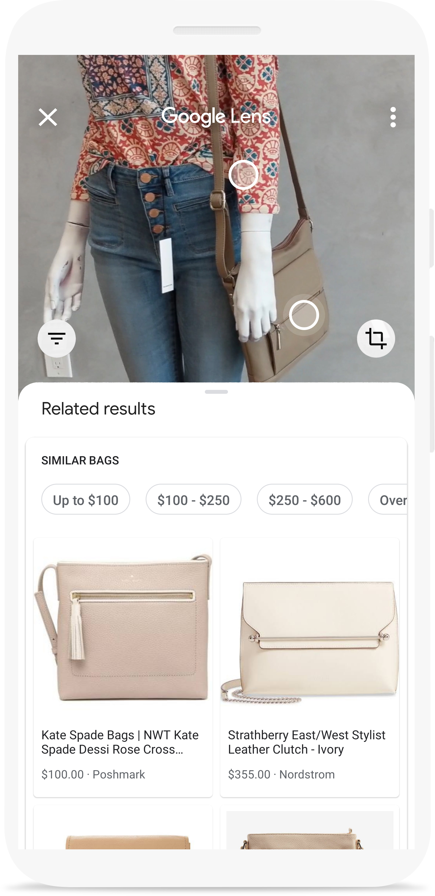
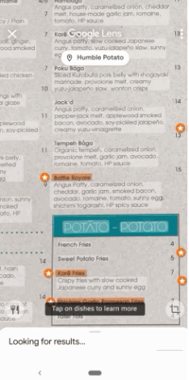
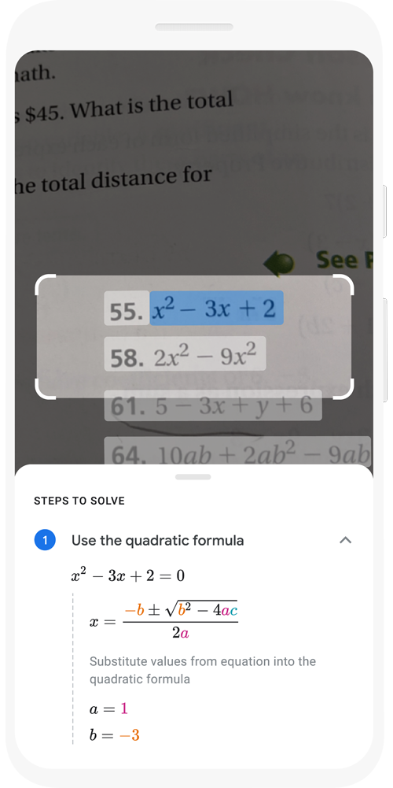

Traduce texto en tiempo real, busca palabras, agrega eventos a tu calendario, llama a un número y mucho más. También puedes copiar y pegar contenido para ahorrar un poco de tiempo.
¿Viste un atuendo que te llamó la atención? ¿Encontraste una silla ideal para tu sala de estar? Inspírate con prendas, muebles y decoraciones similares, sin tener que describir lo que buscas en un cuadro de texto.
 ¿No sabes qué pedir en un restaurante? Busca los platos y descubre cuáles son populares, directamente en el menú, con fotos y opiniones de Google Maps.

Obtén más información sobre los puntos de referencia populares. Consulta calificaciones, horarios, datos históricos y mucho más.


Averigua qué planta tiene tu amigo en su apartamento o de qué raza era el perro que viste en el parque.
¿No puedes resolver un problema? Encuentra rápidamente explicaciones, videos y resultados de la Web sobre matemáticas, historia, química, biología, física y mucho más.